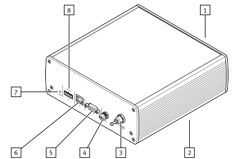

PGVA examples
Below will outline some examples of how to setup and run the PGVA along with basic function calls
Ethernet
The examples listed below will be using the Ethernet port or [6] located in the diagram below.

Hardware Setup
In order to run the examples listed below,
- A connection via ethernet cable must be made from the ethernet port of the PGVA to the host PC or device before the examples below can be run.
- Ensure that the host PC is connected to the PGVA via ethernet, either directly or via an intermediate networking device.
- Connect the PGVA-1 via ethernet port to the host PC
- For further documentation on how to setup the hardware, please reference the Festo Resources section of this page
Validating Setup
There are several ways to validate a correct Ethernet configuration and setup for connection to the PGVA-1 device below are two simple solutions.
It is important to note that the PGVA-1 device will refuse a connection if the host PC or device's ethernet network range does not match that of the PGVA-1.
Default IP Address Range
Typically, the PGVA-1 ip address lies within a range of 192.168.0.1 -> 192.168.0.100. This comes preprogammed within each device. To validate connection this way:
1. Validate that the host PC's ethernet port is on the same network range as 192.168.0.xxx
2. Use the Address Resolution protocol (arp) to display all connections on the PC
4. Use
ping to validate the PC can talk to the deviceUsing Festo's Field Device Tool
Festo offers a field device tool to scan for Festo devices connected to the host PC.
1. Download the Festo Field device tool
2. Using the Festo field device tool, scan for the device
3. Once device is found, configure host PC's ethernet port to the same network range as that of the PGVA-1 device
Using Festo's automation suite application'
Festo also offers an automation suite application that allows for complex configuration and control of Festo's wide variety of devices including the PGVA. For more information, please refer to the Festo Automation Suite page.
1. Download the Festo Automation Suite.
2. Using the Automation Suite find and configure the PGVA with the network range desired.
Using Festo's Automation Suite Application
The Festo Automation Suite, a software application for device configuration and management, can also be used to read or configure the IP address and range of the device using the Device Scan view. To download the Festo Automation Suite, please visit here
Coding Examples
The examples below provide basic implementations of the PGVA python driver and usage.
Importing The PGVA Driver And Library
Before any examples that can be run, the PGVA-1 front end and tcp configuration needs to be defined first.
Basic Startup
Example script of importing libaries into code space
Setting Output Pressure
Example script to set output pressure on a PGVA instance.
Setting Output Vacuum
Example script to set output vacuum on a PGVA instance.
Reading Internal Sensor Data
Read and print all internal sensor data.
Running A Triggered Pressure Actuation For A Period Of Time
Example script of how to run a timed pressure process.
Running A Triggered Vacuum Actuation For A Period Of Time
Example script of how to run a timed vacuum process.
Setting Internal Chambers For Pressure And Vacuum
Example script to set internal pressure and vacuum chambers on a PGVA instance.
Printing The Driver Information Of The PGVA Python Driver
Example script that prints the driver information.
Running The Code
To run any of the following examples, navigate to the examples directory and follow the instructions below. Make sure to follow the section above for the setup instructions, a physical connection to the device must be made in order to run any driver code.
Running In Virtual Environment
- Activate the virtual environment
- Run
Running With uv
Within your console enter the following command.